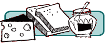

Jen’s KitchenIf you love to read about cooking and eating, would like to find out about of some of the best restaurants in the world, or just want a few choice recipes to add to your collection, this is the site for you!
Your pal, Jen at Jen's Kitchen